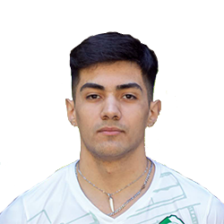

LIGA ARGENTINA
VOLEIBOL
LISTA DE JUGADORES DE DEFENSORES
| Nombre | Nº | Apellido y Nombre | Posicion | Fecha de Nacimiento | Altura |
|---|---|---|---|---|---|
| 1 | Chiesa Bautista | Central | 09-08-2003 | 195 cm | |
|  | 2 | Ibazeta Reta Lucas | Punta Receptor | 19-09-2002 | 182 cm |
| 3 | Grondona Facundo | Punta Receptor | 15-05-2002 | 190 cm | |
| 4 | González Lautaro | Libero | 10-07-2002 | 185 cm | |

|
5 | La Gioia Tomás | Armador | 03-03-2004 | 184 cm |
|
|
6 | Heredia Ignacio | Opuesto | 12-04-2005 | 190 cm |